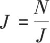
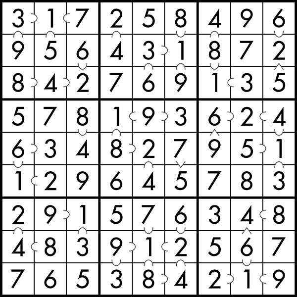
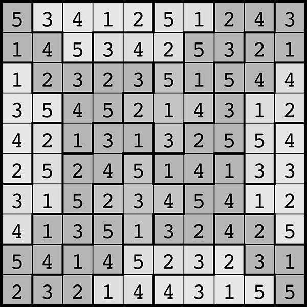

附录 3
解题思路与参考答案
建议你在查阅下面的提示或答案之前，先花些时间自己思考一下。多看看那些示例，寻找一下解题的灵感。慢慢来，不必着急，花多长时间都可以，毕竟努力思索的过程也是一段相当宝贵的经验。
解题思路
分割蛋糕：多构想一些特殊情况。假如被切走的那块蛋糕分量极小，你该如何切分剩下的蛋糕？
切换电灯开关：先自己试几次，把注意力集中在某几个灯泡之上，看看哪些操作会影响它们的开关状态。
“整除”数独：注意，每个 3×3 的小九宫格中都用“⊂”标好了整除关系，你可以据此推测出大部分数字 1 的位置。然后寻找那些被“⊂”连成一串的格子。比如你找到了三个格子A ⊂ B ⊂ C，而且你很确定这三个格子中没有数字 1，那么A、B、C三个数字只能是 2⊂ 4 ⊂ 8。另外还要留心那些可以同时被好几个相邻方格整除，或者同时整除好几个相邻方格的特殊格子。需要注意的是，5 和 7 这两个数字比较特别，它们无法整除 1~9 中的任何一个数字（除了它们自己），也无法被 2~9 中的任何一个数字整除（除了它们自己）。
红黑纸牌戏法：假如第二份牌组里的黑牌全被换成了第一份牌组里的红牌，那第二份牌组的数量会发生变化吗？
水与酒：这个迷题和红黑纸牌戏法有很多相似之处，你发现了吗？
循环游戏：一边探索一边总结规律。需要注意的是，如果某个细胞三角形中刚好只有一条边上存在箭头，然后你在另一条边上画了一个与它方向相同的箭头（为了完成一个循环），那你就已经输了，因为你的对手可以在接下来的一步完成循环，终结游戏。
几何趣题：仔细观察两个矩形的重合区域，发现什么特点没有？你能不能巧妙地把这个区域分成几份，好让每一份的面积都可以较为轻松地计算出来？
原木上的蚂蚁：假设蚂蚁的数量不是 100 只，而是 2 只，然后分析一下蚂蚁在碰撞前后的不同与相同之处。你发现什么没有？
棋盘难题：每块多米诺骨牌都会同时覆盖一个黑格子和一个白格子。既然如此，是不是我们在棋盘上随意去掉一个黑格子和一个白格子，剩下的棋盘都能够被骨牌“平铺”？坐落于某个白格子之上的马，下一步可以落到哪里？一枚俄罗斯方块会覆盖哪些颜色的格子？你该如何给每个 1×1×3 的小立方体涂色，才能让 8×8×8 的大立方体上的每一种颜色覆盖相同数量的格子？
松本龟太郎滑块游戏：你可以用纸板或纸片亲手做一个仿制品。想一想，你该如何移动滑块，才能让最大的方形滑块越过水平放置的长条滑块的阻拦？
鞋带计时谜题：第一个问题的答案要小于 7.5 分钟，第二个问题的答案有些不可思议。
维克里拍卖：想办法证明，某位买家按照心理预期价格出价所产生的结果，永远不会差于其他任何出价所产生的结果。
五格骨牌数独：首先找到那些同时包含两个 2 或两个 4 的行或列，你发现什么规律了吗（你可以仔细观察一下左下角的那个五格骨牌）？算清相邻两行或两列中某些特定数字的个数，可以让问题变得更容易。
权力指数：三个派系共存在 6 种出场顺序：ABC，ACB，BAC，BCA，CAB，CBA。其中哪几种顺序可以让派系C成为关键派系？
多项式的次数：所需次数其实很少，正确答案或许比你想的简单得多。“系数大于 0”是一个很关键的前提。你能想办法确定最大系数的范围吗？
球面上的 5 个点：别忘了，你的目标是证明无论选取球面上的哪5 个点，都必然存在某个半球可以同时包含其中的 4 个。你可以先构想一下“最差的情况”，然后证明即便在这种情况下该结论依旧成立。不过，这还不足以证明每种情况下该结论都能成立。另外请思考一下，是否存在一种较为简单的办法来证明任意两个点都存在于同一个半球之上？
参考答案
分割蛋糕：首先确定未切分之前的大长方形蛋糕的中点，然后确定被切掉的小长方形蛋糕所留下来的空洞部分的中点，沿着两点所连成的直线切下去就可以平分剩下的蛋糕，因为每部分的大小都等于原蛋糕的一半减去空洞的一半。
切换电灯开关：完成所有操作之后，只有编号为 1，4，9，16，25，36，49，64，81，100 的灯，也就是编号为平方数的那些灯是亮着的。以编号为N的灯泡为例，在第x轮操作时，只有在x是N的因数的情况下，灯泡N的状态才会发生变化（因数指的是可以整除N的数）。大多数因数都出现的：假如J是N的因数，那么也会是N的因数。只有在

的时候，因数的数量才会是奇数，意味着N=J2。换句话说，N是平方数。“整除”数独：见下图。

红黑纸牌戏法：具体原理如下。首先，设牌组数量的一半为H，第一份牌组里红牌数量为R，第二份牌组里红牌数量为S，第一份牌组里黑牌数量为A，第二份牌组里黑牌数量为B。显然，R+S=H（因为红牌总数为H），S+B=H（因为第二份牌组的总量为H），进而可以得到R=B=H-S。我们也可以这样想：如果把第一份牌组里的R张红牌放到第二份牌组里，再把第二份牌组里的B张黑牌放到第一份牌组里，那么所有的红牌都被放到了第二份牌组。在此操作前后，第二份牌组的数量都是H，所以R=B。
水与酒：设水的总体积为H。操作完毕之后，设酒杯中的水量为R，水杯中的酒量为B。将R与B交换一下，总体积H不会发生任何变化，所以R=B。
循环游戏：后手玩家拥有必胜的策略。在先手玩家用箭头标记了一条边之后，图中将只剩下一条边，和被标记的这条边完全不存在任何接触，后手玩家在剩下的这条边上画个箭头即可（方向随意）。之后，后手玩家只要确保自己不会帮助先手玩家画出某个完整循环的第二笔，就可以确保最终的胜利。这个游戏还有很多好玩的拓展问题，比如，对于其他种类的起始图案，哪个玩家拥有必胜策略？是否存在这样一种起始图案，可以在每条边都画上了箭头的情况下，仍旧不存在任何完整的循环？
几何趣题：我们将每两个大矩形重叠在一起形成的那三个小矩形称为矩形Q1、Q2、Q3，将三个大矩形的长边叠加在一起所形成的交汇点称为P，将每两个大矩形的短边叠加在一起所形成的交汇点称为M1、M2、M3。分别沿着PM1、PM2、PM3 的连线将三个小矩形平分成两份（左右对称），你会发现每一小份三角形都刚好是大矩形的一个角，面积为大矩形的 1/8，也就是 4/8=0.5。由此可见，每块重叠区域的面积为 1，三块重叠区域的总面积为 3，图中三个大矩形重叠之后形成的图案的总面积为 3×4-3=9。
原木上的蚂蚁：虽然看上去每只蚂蚁都会撞来撞去，踪迹难寻，可实际上只要注意到关键一点，问题就会变得极为简单：两只蚂蚁相遇后各自掉头，等同于两只蚂蚁凭空穿过了彼此。因此，无论蚂蚁数量有多少，实际情况都差不多。我们不妨认为每只蚂蚁都是独立运动的，和其他蚂蚁无关。这样一来，需要等待的最长时间就是一只蚂蚁走完整根原木所需要的时间，即 1 分钟。
棋盘难题：第 6 章中我们已经证明，如果从棋盘上去掉两个颜色相同的方块，那么剩余部分无法被骨牌平铺。如果去掉的两个方块颜色不同，那么剩余部分可以被骨牌平铺——我们可以一块挨一块地在棋盘上串连出一条路径，把 64 个方块连在一起，然后在这条路径上去掉一黑一白两个方块，将路径断为两截，同时保证每一截路径的方块都是偶数个，此时剩下的两截路径都可以被骨牌平铺。
至于 7×7 棋盘上的马，我们需要注意，马每移动一次都会跳到另一个颜色的方块上，因此只有在棋盘的黑白格子数量相等的情况下，才能让每个马同时踏出符合国际象棋规则的一步。然而 7×7 的棋盘有奇数个格子，无法让黑白格子数量相等。
对于俄罗斯方块的问题，我们可以发现，7 种俄罗斯方块图案刚好可以和 7 个英文字母O、I、L、J、T、S、Z的形状对应起来。每个形状都刚好同时覆盖两个黑格子两个白格子，只有T形状除外，所以 7 种俄罗斯方块无法覆盖 4×7 大小的棋盘。
对于去掉了对角线上两个方块的 8×8×8 立方体，我们可以用坐标系给每个小方块标出位置，然后从（1，1，1）开始到（8，8，8）结束，依次给小方块涂色。涂色规则为，将小方块坐标（i，j，k）中的三个数字i、j、k相加，然后除以 3，余 1 就涂第 1 种颜色，余 2就涂第 2 种颜色，余 0 就涂第 3 种颜色。1×1×3 的长方体刚好同时对应 3 种颜色，因此，大立方体的剩余部分必须保证 3 种颜色的格子数量一样，才能用 1×1×3 的长方体填充。可事实上每种颜色的格子数量并不相等。
松本龟太郎滑块游戏：在游戏刚开始的时候我们给 10 个滑块编号，其中年轻女子为 2 号；4 个长条状滑块分别为 1、3、4、6 号（按照从左到右、从上到下的顺序）；水平放置的长条滑块为 5 号；4 个小方块分别为 7、8、9、10 号（按照从左到右、从上到下的顺序）。然后我们可以按照以下顺序操作，帮助年轻女子逃出生天： 6，10，8，5，6，10（走一半），8，6，5，7（上，左），9，6，10（左，下），5，9，7，4，6，10，8，5，7（下，右），6，4，1，2，3，9，7，6，3，2，1，4，8，10（右，上），5，3，6，8，2，9，7（上，左），8，6，3，10（右，下），2，9（下，右），1，4，2，9，7（走一半），8，6，3，10，9（下），2，4，1，8，7，6，3，2，7，8，1，4，7（左，上），5，9，10，2，8，7，5，10（上，左），2。
鞋带计时谜题：我们可以通过烧鞋带的方式测量 3.75 分钟。首先，我们将原始鞋带的最左端与最右端分别设为A和B。由于鞋带具有对称性，从中间切开之后的两截必然一模一样，都能燃烧 30 分钟，不过我们无法保证这两截鞋带也具有对称性。之后我们并排放置两截鞋带，使A与B在同一方向，从中挑一截鞋带，同时点燃它的两侧。15 分钟之后两团火焰会相遇，记下相遇位置，然后沿着相遇位置把剩下的那截鞋带切成两段。需要注意的是，除了燃烧时间都是 15 分钟以外，这两段鞋带可能不存在其他任何相似之处。随后我们同时点燃第一段鞋带的两端，以及第二段鞋带的任意一端。7.5 分钟后，第一段鞋带上的两团火焰会相遇，此时立即扑灭第二段鞋带上的火焰。可以确定的是，最后剩下的这部分鞋带可以燃烧 7.5 分钟，我们同时点燃它的两端，当两团火焰相遇时，我们就测出了 3.75 分钟。
对于第二个问题，我们其实可以测出任意小的时间间隔！例如，对于数字 2 的任意次幂，我们都可以用 60 分钟除以它，然后测出这个时间间隔。具体方法为，沿着两根鞋带（两根鞋带完全一样，且具有对称性）的中点，将它们切成四截一模一样但是失去了对称性的鞋带，拿出三截，备用一截。
接下来我们将设计一套可以一直操作下去的标准程序，把三截燃烧时间为T的鞋带（其中有两根一模一样）变成三截更短的、燃烧时间均为T/2 的鞋带（其中仍然有两根一模一样）。首先我们给最初的这三截鞋带起名为 1 号鞋带、2 号鞋带、3 号鞋带，每截鞋带的燃烧时间都是T，而且 1 号鞋带与 2 号鞋带一模一样，满足了我们这套程序的前提条件。接下来我们把 1 号、2 号鞋带像前文那样并排放置，同时点燃 3 号鞋带的两端以及 2 号鞋带的任意一端。当 3 号鞋带上的两团火焰相遇时，立即扑灭 2 号鞋带上的火焰，然后沿着扑灭的位置将 1 号鞋带切成两段。注意，1 号鞋带剩下的某一段，必然和扑灭后的 2 号鞋带一模一样，而且这三段鞋带的燃烧时间都是T/2。如此我们便完成了这套标准程序。
该程序可以无限操作下去。换句话说，我们可以测出任意小的时间间隔T/2k，其中k为正整数。
维克里拍卖：这种拍卖方式可以让人们如实出价的原因如下。首先，我们假设买家对该汽车的估价等于他的实际出价，也就是V ；设M为其他买家的最高出价（数值未知）。无论M等于多少，我们都可以证明其他任意一个出价B都不如出价V。假如V和B都小于M，那么这位买家无论如何都会失去汽车的购买权。假如V和B都大于M，那么这位买家一定能拿到汽车的购买权，而且成交价格一定是M。由此可见，如果出价B和出价V的结果有什么不同的话，那一定是在M介于B与V之间的情况下。
若B > M > V，则出价B会给买家带来一些损失，因为虽然他拿到了汽车的购买权，但支付价格超过了他的估价，会赔掉一部分钱。假如他的出价是V，那么虽然他没拿到汽车购买权，但净资产不会有任何亏损。
若B < M < V，则出价B仍然会给买家带来一些损失，因为他拿不到购买权，导致净资产无法增加。假如他的出价是V，那么他就可以拿到购买权，而且出价比估价低，净资产得到了一定增长。
五格骨牌数独：答案如图所示。

权力指数：3 个派系共有 6 种出场顺序： ABC，ACB，BAC，BCA，CAB，CBA。如果派系A有 48 个人，派系B有 49 个人，派系C有 3个人，那么无论在哪种出场顺序中，第二个出场的都是关键派系，所以各派系的夏普里-舒比克权力指数都是 1/3。
多项式的次数：只需问两次即可确定该多项式。首先令x=1，我们可以得到全部系数的总和。由于系数非负，这个总和将大于任何一个单独的系数。假如这个总和的位数为k，那我们再求出x=10（k+1）时多项式的值就可以了。对于第二次求出的数值，我们从个位数开始往前数，每k+1 位数就能确定一个系数。举个例子，比如说x=1 时求出的系数总和为 1044，那么该多项式中最大的系数一定不会超过 4 位数。然后我们再求出x=10（4+1=5）时多项式的值，得到了12003450067800009 这样一个数字，我们就可以从右往左看，每隔 5位数就能确定一个系数，最终答案为 12x3+ 345x2+ 678x + 9。
球面上的 5 个点：我们在这 5 个点中随意选择两个点，然后根据它们确定一个大圆（大圆指的是球面上任意一个圆心与球心相重合的圆），该大圆可以将球面平分为A和B两个半圆，此时被选中的这两个点既存在于A的边界上，又存在于B的边界上，所以此时A和B都有两个点。之后剩下的三个点要么一边一个，另一边两个；要么一边没有，另一边三个。无论哪种情况，我们都能保证A和B中有一个半圆的点数大于等于 4。